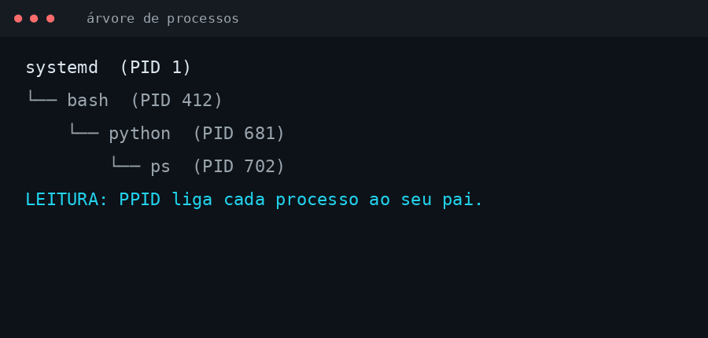
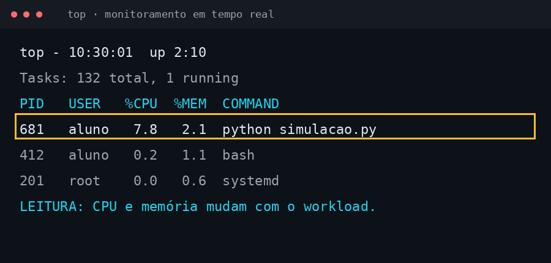
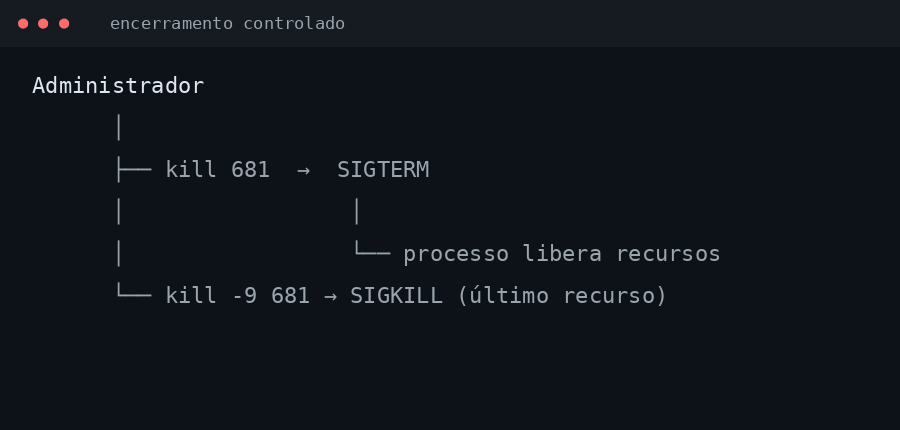

O computador executa muitos trabalhos ao mesmo tempo
Enquanto um navegador carrega uma página, serviços de rede respondem conexões, o editor salva arquivos e o sistema atualiza relógio, áudio e interface. A CPU é finita; o sistema operacional precisa organizar essa concorrência.
Programa não é processo
Um programa é um arquivo com instruções. Um processo é uma instância desse programa em execução: possui memória, registradores, estado, credenciais, arquivos abertos e contexto de execução.
| Programa | Processo |
|---|---|
Arquivo armazenado, como firefox ou python. | Execução concreta, como uma janela ou serviço em atividade. |
| Pode existir sem executar. | Existe enquanto o kernel o mantém como entidade executável. |
PID, PPID e a árvore de processos
O kernel atribui a cada processo um PID (*Process Identifier*). Todo processo, exceto o inicial, também possui um PPID: o identificador de seu processo pai. A criação de processos forma uma árvore.
$ ps -ef
UID PID PPID C STIME TTY TIME CMD
root 1 0 0 09:00 ? 00:00:02 systemd
aluno 412 390 0 10:12 pts/0 00:00:00 bash
LEITURA: PID identifica; PPID revela a origem de um processo.

Primeiro passo: observar processos
Antes de alterar qualquer processo, observe. O comando ps mostra processos vinculados ao terminal atual.
Ciano: comando que consulta processos.
$ ps
PID TTY TIME CMD
412 pts/0 00:00:00 bash
681 pts/0 00:00:00 ps
LEITURA: cada linha representa um processo associado a esta sessão.
Auditar: quem executa e quanto consome?
Para visualizar processos de outros usuários, inclusive os que não possuem terminal, use a forma expandida.
Ciano: comando · Laranja: opções. a amplia usuários, u mostra detalhes e x inclui processos sem terminal.
$ ps aux
USER PID %CPU %MEM VSZ RSS COMMAND
aluno 412 0.3 1.1 18432 8120 bash
root 201 0.0 0.6 40212 4996 systemd
LEITURA: PID, usuário, CPU, memória e comando tornam a execução auditável.
ps aux, sem hífen, é a forma BSD convencional. ps -aux mistura sintaxes e não deve ser ensinada como padrão.Monitorar: processos mudam com o workload
Uma lista estática não mostra variações de consumo. top atualiza continuamente CPU, memória, carga e processos. No Linux real, pressione q para sair.
Ciano: comando · Laranja: opção · Verde: processo que será acompanhado.
$ top -p 412
top - 10:30:01 up 2:10
Tasks: 1 total, 1 running
%Cpu(s): 4.2 us, 1.3 sy
PID USER %CPU %MEM COMMAND
412 aluno 1.2 1.1 bash
LEITURA: o kernel atualiza continuamente o estado e o consumo de cada processo.

Auditar contexto e ajustar prioridade
Um processo possui diretório de trabalho e prioridade relativa. O diretório pode ser consultado; a prioridade pode ser ajustada sem “tomar” a CPU do sistema.
renicevalor-pPID
$ pwdx 412
412: /home/aluno/projeto
$ renice 10 -p 412
412 (process ID) old priority 0, new priority 10
LEITURA: prioridade maior de nice tende a reduzir a preferência de CPU do processo.
Encerrar: primeiro de forma controlada
Processos podem falhar ou permanecer sem resposta. A administração responsável tenta primeiro uma finalização que permita limpeza de arquivos e conexões.
kill-9PID
Verde: alvo. Coral seria reservado para operadores; laranja indica opção/sinal.
$ kill 412
# envia SIGTERM: solicitação de encerramento controlado
$ kill -9 412
# envia SIGKILL: encerramento forçado
LEITURA: SIGKILL é último recurso; o processo não consegue tratar ou adiar esse sinal.
kill em PIDs desconhecidos. Em laboratório, use apenas processos criados para prática.
Fluxo de administração de processos
Síntese
Processos são a unidade pela qual o kernel transforma programas em trabalho executável. Administrar processos exige primeiro observar, depois interpretar e somente então agir.
Referências
Tanenbaum e Bos, Modern Operating Systems; Silberschatz, Galvin e Gagne, Operating System Concepts; man pages: ps, top, nice, renice e kill.